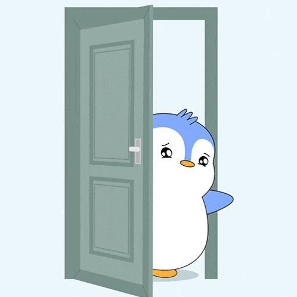

A Day in the Life of a Penguin
Published on: November 5, 2024
Penguins are fascinating creatures! Known for their waddling walk and black-and-white “tuxedo” appearance, penguins live in some of the coldest regions on Earth.
These flightless birds have adapted to life in the water, with their streamlined bodies and strong flippers helping them glide effortlessly through the ocean. Penguins spend about half their time in the water and the other half on land.
Join us as we dive into the life of these charming birds, exploring their habitats, behaviors, and the challenges they face in a rapidly changing climate.